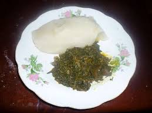
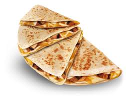

Food is definitely part of our daily lives.Because we we live in a very busy and digital world, people take the importance of food lightly. Think about it...when was the last time you really enjoyed a meal. We go to a restaurant or a food joint eating and looking at our phones or mobile devices.
Food has been know to bring people with sharp differences together. It is able to break cultural barriers and foster adventure in learning about different cultures. Ot has also been the cradle where the love of a couple was born. Food has sparked for business ideas and also a medium where people experience fun. Of course, when eating there are dire consequences when food is eaten with no self control, its benefits if eaten in the right manner promotes wellbeing of the man both physically and psycologically
| Image | Dish | Country | Description |
|---|---|---|---|
|  | Fufu and Vegetable Soup | Nigeria | This is pounded yam eaten with different vegetable such as spinach,pumpkin and cassava leave.Added is also a lot of meat and seafood to add variety and flavor |
|  | Quesadilla | Mexico | This is corn tortila filled with varieties such as cheese,ground beef and vegetables. What you have inside is really up to you |
| Lasagna | Italy | Several layers of Pasta sheets stuffed with tomato sause, ground beef,cheese and vegetables if you please |